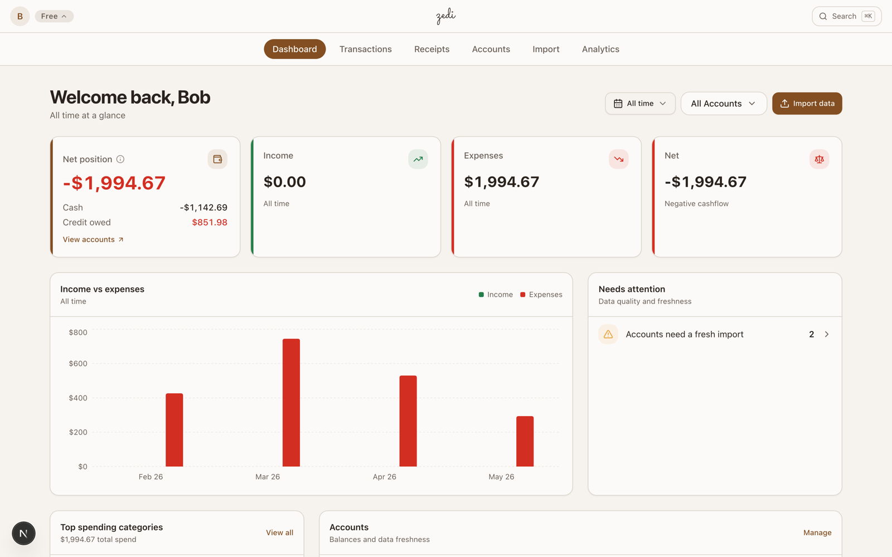

PROJECT / ZEDI
Zedi
A personal finance platform I built end to end, live at zedi.dev.
Rust
Axum
Next.js
Postgres
Claude Vision
Stripe

Overview
Zedi started in June 2025 as a tool for my own banking data and became a real product in March 2026 through Cal Poly's Applied Human Factors course (IME 543), where I turned it into a multi-tenant SaaS. It ingests statements, reads receipts, categorizes spending automatically, and gives you an honest picture of where your money goes.
The build
- Rust + Axum API with PostgreSQL and row-level multi-tenancy, so every tenant's data is isolated at the database layer.
- Next.js frontend with the dashboard, transactions, accounts, analytics, receipt, and X-ray views shown below.
- Claude Vision receipt OCR: photograph a receipt and it becomes a categorized transaction.
- CSV, QFX, and PDF statement imports with auto-categorization.
- Stripe billing for subscriptions, deployed on Railway.